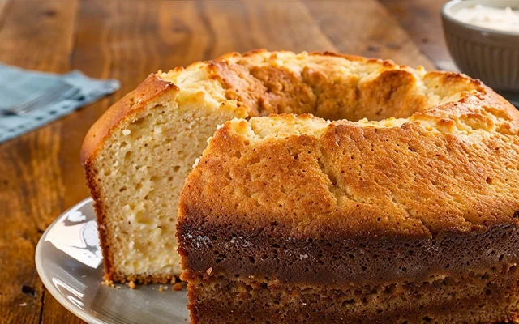

Bolo Simples

Ingredientes
- 3 ovos
- 2 xícaras de açúcar
- 3 xícaras de farinha de trigo
- 1 xícara de leite
- 1/2 xícara de óleo
- 1 colher de sopa de fermento em pó
Modo de preparo
- Preaqueça o forno a 180°C.
- Em uma tigela, bata os ovos com o açúcar.
- Adicione o leite e o óleo, misturando bem.
- Acrescente a farinha aos poucos.
- Por último, misture o fermento delicadamente.
- Despeje a massa em uma forma untada.
- Asse por cerca de 40 minutos.
- Espere esfriar e sirva.